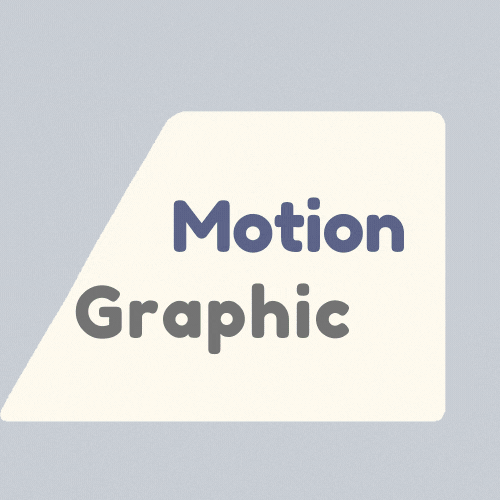

This is a portfolio of work from the Narrative, Digital Media, and Learning class. We explore the role of narrative in digital media design for learning. Narrative forms have been used for teaching and learning given their role in memory, cognition, and learner engagement, as well as in case studies of learning, teaching, and research. This course will serve as a laboratory in which we question, investigate, and experiment with narrative and digital media forms, while grounding our inquiry and design work in research and application of learning theory and science.
This page will be a compilation of the content of the assignments and projects in this class
NARRATOR


Narrative: Reflection
Week5 - Reflection
Individual
A brief reflection describing how you see narrative as a designer, user or story teller.

Narrative: Audio
week6 - Narrative in Audio
Individual
An innovative audio centric teaching/learning product.

Narrative: Motion Graphic
Week7 - Narrative in Motion Graphic
Individual
A proposal for an innovative motion graphic-centric teaching/learning experience.
Narrative:Visual Design
Week9 - Narrative in Visula Design
Group Project
A proposal for an innovative visual design teaching/learning experience.
Narrative: Games and learning
Week10 - Narrative in Games
Individual
A brief description of a game that was designed to help players learning how to cook.
Narrative: Data Visualization
week11 - Narrative in Data Visualization
Group Project
A proposal for an innovative data visualization centric teaching/learning product
Narrative: Instructional Design
Week12 - Narrative in Instructional Design
Individual
A proposal for an innovative instructional design centric teaching/learning product.